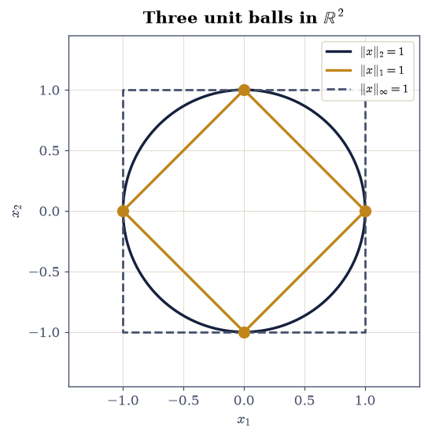
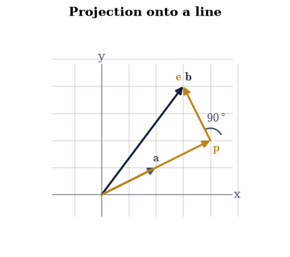
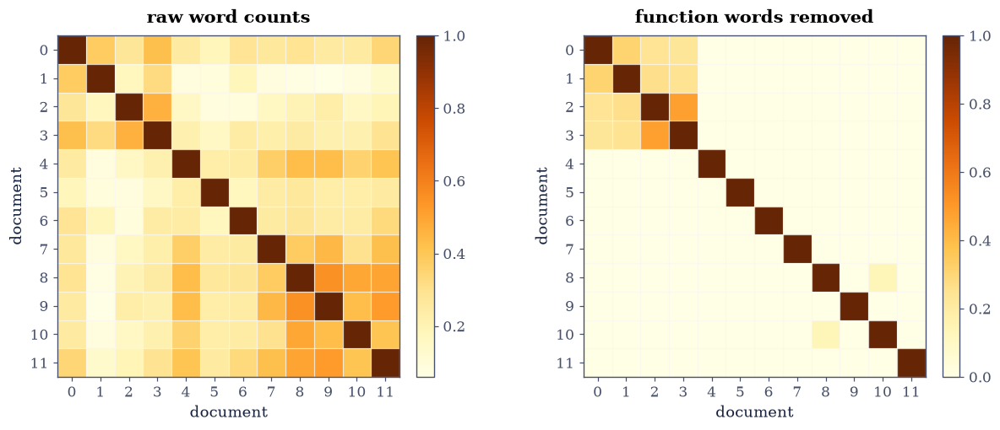

0.3 Vectors: Geometry, Norms, and Inner Products#
Notebook overview#
One operation carries most of the geometry in this course. The inner product takes two vectors and returns a number, and from that number alone come length, angle, perpendicularity, projection, and the notion of “closest point” that Chapter II is built on. It is worth an hour to establish it carefully, because every later chapter spends it: least squares is a projection, the spectral theorem is a statement about orthogonal directions, and the cosine similarity that ranks search results is the same formula with the vectors normalised.
The notebook is elementary and it is not padding. Three things in it regularly
surprise people who have used NumPy for years. Computing a length by the
obvious formula \(\sqrt{\sum x_i^2}\) overflows for perfectly reasonable inputs,
and so does np.linalg.norm, while math.hypot does not. The angle formula
through arccos is numerically poor near \(0\) and \(\pi\), exactly where you most
want it. And the cosine similarity between two documents built from raw word
counts is dominated almost entirely by the word “the”, which is the reason
§8.4 exists.
We build the dot product three ways (Exercise 1), extract length and angle from it (Exercise 2), meet the family of norms (Exercise 3), compute one safely (Exercise 4), split a vector into parallel and perpendicular parts (Exercise 5), apply the whole apparatus to text (Exercise 6), and extend it to complex vectors, where a conjugate that looks optional turns out not to be (Exercise 7).
How to read a check. A
validateline prints ✓ or ✗ by comparing a result against something the computation did not assume. A ✗ flags a mismatch to investigate — a genuine error, a valid convention difference, or a tolerance set too tight — never a verdict on its own.
Theory in brief#
The inner product, and the four things it defines#
For \(\mathbf{x}, \mathbf{y} \in \mathbb{R}^n\) the inner product is
It is symmetric, linear in each argument, and positive definite (\(\mathbf{x}^{\top}\mathbf{x} > 0\) unless \(\mathbf{x} = \mathbf{0}\)). Those three properties are the entire definition of an inner product, and §1.5 will use them on spaces whose elements are polynomials rather than columns of numbers.
Everything geometric follows. The length is
the angle \(\theta\) between two nonzero vectors satisfies
and orthogonality is the case \(\mathbf{x}^{\top}\mathbf{y} = 0\). For Eq. 28 to define an angle at all, the ratio must lie in \([-1, 1]\), which is the Cauchy–Schwarz inequality
with equality exactly when the vectors are parallel. The triangle inequality \(\|\mathbf{x}+\mathbf{y}\| \le \|\mathbf{x}\| + \|\mathbf{y}\|\) follows from it in two lines.
Other norms#
The Euclidean length is one member of a family. For \(p \ge 1\),
and the three that matter are \(p = 1\) (the sum of magnitudes, whose unit ball is a diamond), \(p = 2\) (Euclidean, a circle), and \(p = \infty\) (the largest component, a square). They are equivalent in the sense that each bounds the others,
so which one you use never changes whether something converges, only how fast the number shrinks. Only \(p = 2\) comes from an inner product, which is why it is the one with angles.
Projection#
The component of \(\mathbf{b}\) along a nonzero direction \(\mathbf{a}\) is
and a one-line calculation gives \(\mathbf{a}^{\top}\mathbf{e} = 0\): the residual is orthogonal to the direction, always. That single fact is the whole of least squares, and Eq. 32 becomes the projection matrix of §2.1 once \(\mathbf{a}\) is replaced by a matrix. Since \(\mathbf{p} \perp \mathbf{e}\), Pythagoras applies:
Setup#
Data only: the seeded rng, print options, and the machine epsilon. Both of this notebook’s own methods — the loop inner product and the overflow-safe norm — are built in Exercises 1 and 4, where they are the lesson.
The Setup below holds this notebook’s data and instruments — nothing you are asked to build. It is collapsed so the building stays yours; expand it whenever you want the details.
Exercise 1: Three routes to one number#
The inner product Eq. 26 is the most-executed operation in numerical linear algebra: a matrix–vector product is \(m\) of them, a matrix–matrix product is \(mn\) of them. It is worth knowing the three ways to write it and that they agree.
Take the explicit vectors
for which Eq. 26 gives
\(1\cdot2 + (-2)\cdot1 + 3\cdot(-1) + 0\cdot5 + 4\cdot2 = 2 - 2 - 3 + 0 + 8 = 5\).
Because these are small integers, float64 stores them exactly and all three
routes must return exactly \(5.0\) with no rounding whatsoever.
Part a) Compute \(\mathbf{x}^{\top}\mathbf{y}\) with the loop_dot helper
you write here as a literal loop, with np.dot, and with
np.einsum("i,i->", x, y), and
confirm all three give exactly \(5.0\).
Part b) Confirm the equivalent spellings x @ y and np.sum(x * y) agree
too, and note that the latter allocates a temporary array of length \(n\) while
the former does not.
Part c) Time the loop and np.dot on 200,000-element slices of the
seeded standard-normal draw and report the ratio between them. State the flop count from
ecp.linalg.flops("dot", n) and check it against \(2n\).
loop_dot(x, y) = np.float64(5.0)
np.dot(x, y) = 5.0
np.einsum("i,i->", x, y) = 5.0
x @ y = 5.0
np.sum(x * y) = 5.0
all exactly 5.0: True
n = 200,000: loop 35.38 ms np.dot 0.0518 ms ratio 683x
flops(dot, 200000) = 400,000 (= 2n)
Validation 1#
Exact equality is the right check here, not a tolerance: the entries of Eq. 34 are small integers, so every product and every partial sum is representable, and any deviation would be a genuine bug rather than rounding.
✓ all five spellings of the inner product return exactly 5.0 [small integers are exact in float64, so no tolerance is needed]
✓ np.dot and einsum agree on a 2,000,000-element inner product [got -903.795 vs expected -903.795 (rtol=1e-09, atol=0)]
✓ the flop count of an inner product is 2n [got 400000 vs expected 400000 (rtol=0, atol=0)]
✓ the Python loop is more than 50x slower than np.dot [measured 683x at n = 200,000]
True
Exercise 2: Length, angle, and the inequality that makes angles exist#
The angle formula Eq. 28 only defines an angle because
Cauchy–Schwarz Eq. 29 guarantees the ratio never leaves
\([-1,1]\). That guarantee is exact in mathematics and not quite exact in
floating point, which matters: np.arccos of anything slightly above 1 returns
nan, and for nearly parallel vectors the computed ratio can exceed 1 by a
rounding error. Any angle routine that will meet real data must clip.
There is a second, subtler problem with computing angles this way. Near
\(\theta = 0\) the cosine is flat — \(\cos\theta \approx 1 - \theta^2/2\) — so an
error of \(\varepsilon\) in the cosine becomes an error of \(\sqrt{2\varepsilon}
\approx 2\times10^{-8}\) in the angle. That is eight digits lost, and it is the
same cancellation §0.2 met in the Gram determinant. The repair used in practice
is np.arctan2 of the perpendicular and parallel components, which stays
accurate everywhere.
Part a) Verify Eq. 29 and the triangle inequality on
\(10^4\) random pairs from rng.standard_normal((10_000, 5)), computing the
inner products with np.einsum("ij,ij->i", U, V) and the lengths with
np.linalg.norm(..., axis=1). Report the largest observed ratio
\(|\mathbf{u}^{\top}\mathbf{v}|/(\|\mathbf{u}\|\|\mathbf{v}\|)\) and confirm no
pair exceeds 1.
Part b) Confirm equality holds in Cauchy–Schwarz exactly when the vectors are parallel, by testing the specific pair \(\mathbf{u} = (1,2,3)^{\top}\) and \(\mathbf{v} = -2\mathbf{u}\), where the ratio must be exactly 1.
Part c) Compare the two angle routines on the pair \(\mathbf{a} = (1,0)\) and
\(\mathbf{b} = (\cos\theta, \sin\theta)\) for \(\theta = 10^{-2},\dots,10^{-8}\):
the arccos form of Eq. 28 against
np.arctan2(|a_1 b_2 - a_2 b_1|, a·b). Report the relative error of each
against the exact \(\theta\).
Cauchy-Schwarz over 10,000 pairs:
largest |u.v| / (||u|| ||v||) : 0.988067757449
pairs exceeding 1 : 0
triangle inequality holds : True
parallel pair ratio: 1.00000000000000000
theta rel err (arccos) rel err (arctan2)
1e-02 1.442e-13 0.000e+00
1e-03 7.831e-12 0.000e+00
1e-04 2.622e-09 0.000e+00
1e-05 4.137e-08 0.000e+00
1e-06 6.657e-05 0.000e+00
1e-07 3.997e-04 0.000e+00
1e-08 1.000e+00 0.000e+00
Validation 2#
Cauchy–Schwarz is checked as a strict bound over the whole sample rather than
on one pair, and the parallel case is checked as exact equality. The angle
comparison is checked as an ordering — arctan2 must beat arccos by orders
of magnitude at the smallest angle — which is the robust form of the claim.
✓ Cauchy-Schwarz holds for all 10,000 random pairs [largest ratio 0.988067757449]
✓ and so does the triangle inequality [both follow from positive definiteness of the inner product]
✓ equality holds exactly for parallel vectors [got 1 vs expected 1 (rtol=0, atol=1e-15)]
✓ arctan2 beats arccos by >1000x for the angle at theta = 1e-8 [arccos 1.00e+00 vs arctan2 0.00e+00: the cosine is flat near 0, so inverting it loses half the digits]
True
Exercise 3: The three norms, and the shapes of their unit balls#
The Euclidean length is one of a family Eq. 30, and the other members are not curiosities. The \(1\)-norm is what makes LASSO regression select variables, and it reappears in §2.4 as the regularizer that produces sparse solutions; the \(\infty\)-norm is the natural measure of worst-case error and is how §5.1 states its bounds.
The clearest way to see the difference is the unit ball, the set \(\{\mathbf{x} : \|\mathbf{x}\|_p \le 1\}\). For \(p=2\) it is a disc; for \(p=1\) a diamond with vertices on the axes; for \(p=\infty\) a square. The chain Eq. 31 is the statement that the diamond sits inside the disc which sits inside the square, and that the square is not more than \(\sqrt{n}\) times bigger than the diamond.
The corners matter. The \(1\)-norm ball has its extreme points on the axes, which is exactly why minimising a \(1\)-norm subject to a constraint tends to land on a point with zeros in it, and the \(2\)-norm ball, being round, does not.
Part a) For the explicit vector \(\mathbf{x} = (3, -4, 12)^{\top}\), compute
\(\|\mathbf{x}\|_1\), \(\|\mathbf{x}\|_2\), and \(\|\mathbf{x}\|_\infty\) from
Eq. 30 by hand (as np.sum(np.abs(x)),
np.sqrt(x @ x), np.max(np.abs(x))) and against
np.linalg.norm(x, ord=...). The exact answers are \(19\), \(13\), and \(12\).
Part b) Verify the chain Eq. 31 on \(1000\) random
vectors in \(\mathbb{R}^7\) from rng.standard_normal((1000, 7)), and report
how tight each inequality gets.
Part c) Draw the three unit balls in \(\mathbb{R}^2\) on one axes, marking the four extreme points of the \(1\)-norm ball, which are the ones that carry zeros.
by hand np.linalg.norm exact
p=1 19.0000 19.0000 19.0
p=2 13.0000 13.0000 13.0
p=inf 12.0000 12.0000 12.0
over 1000 random vectors in R^7:
||x||_inf <= ||x||_2 : True tightest ratio 0.9696
||x||_2 <= ||x||_1 : True tightest ratio 0.6756
||x||_1 <= sqrt(7)||x||_2: True tightest ratio 0.9876

Fig. 14 The unit balls \(\{\mathbf{x}\in\mathbb{R}^2 : \|\mathbf{x}\|_p \le 1\}\) for \(p = 1\) (diamond), \(p = 2\) (disc), and \(p = \infty\) (square), nested as the equivalence chain of Eq. 6 requires; the amber points are the four extreme points of the \(1\)-norm ball, each of which has a zero component, which is why minimising a \(1\)-norm favours sparse answers.#
Validation 3#
The three norms of a specific vector are checked against their exact integer values, which is possible because \((3,-4,12)\) was chosen as a Pythagorean quadruple. The equivalence chain is checked across the whole sample and both of its ends are confirmed to be attained, so the constants are shown to be sharp rather than merely valid.
✓ the three norms of (3, -4, 12) are exactly 19, 13, and 12 [max|Δ| = 0 (rtol=0, atol=1e-14)]
✓ the equivalence chain of Eq. 6 holds for all 1000 random vectors [no norm is more than sqrt(n) from any other]
✓ the sqrt(n) constant is attained exactly at the all-ones vector [got 1 vs expected 1 (rtol=0, atol=1e-14)]
True
Exercise 4: Computing a length without destroying it#
Eq. 27 says \(\|\mathbf{x}\|_2 = \sqrt{\sum x_i^2}\), and writing
that formula directly is the most natural thing in the world. It is also
wrong for a range of perfectly ordinary inputs, and — this is the part worth
knowing — np.linalg.norm is wrong in the same way, because it computes
x.dot(x) internally.
The failure is squaring. A float64 holds magnitudes up to about
\(1.8\times10^{308}\), so \(x_i^2\) overflows to infinity once \(|x_i|\) passes about
\(1.3\times10^{154}\), and underflows to zero once \(|x_i|\) drops below about
\(1.5\times10^{-162}\). Both are well inside the range the vector itself can
represent. So \(\|(10^{200},\, 2\times10^{200},\, 2\times10^{200})\|_2\), whose
exact value is \(3\times10^{200}\) and is perfectly representable, comes back as
inf.
The repair is one line and is what every serious library does: divide by the
largest magnitude first, so every square lies in \([0,1]\), then multiply the
scale back in. Write scaled_norm(x) to do exactly that.
Write this one yourself — the implementation is the lesson.
math.hypot uses the same idea and, since Python 3.8, accepts any number of
arguments. scipy.linalg.norm also protects itself; np.linalg.norm does not.
Part a) For \(\mathbf{v} = (10^{200},\, 2\times10^{200},\, 2\times10^{200})\),
whose exact norm is \(3\times10^{200}\), evaluate the naive
np.sqrt(np.sum(v**2)), np.linalg.norm(v), scipy.linalg.norm(v),
math.hypot(*v), and the scaled_norm helper. Report which return inf.
Part b) Repeat with \(\mathbf{w} = (10^{-200},\, 2\times10^{-200},\, 2\times10^{-200})\), exact norm \(3\times10^{-200}\), and report which return \(0\).
Part c) Confirm that on an ordinary vector — rng.standard_normal(1000) —
all five routes agree to a relative \(10^{-14}\), so the protection costs nothing
in accuracy and is only ever insurance.
overflow test: v = (1e200, 2e200, 2e200), exact norm 3e200
np.sqrt(np.sum(v**2)) inf <- FAILS
np.linalg.norm(v) inf <- FAILS
scipy.linalg.norm(v) 3.000000e+200
math.hypot(*v) 3.000000e+200
scaled_norm(v) 3.000000e+200
underflow test: w = (1e-200, 2e-200, 2e-200), exact norm 3e-200
np.sqrt(np.sum(v**2)) 0.000000e+00 <- FAILS
np.linalg.norm(v) 0.000000e+00 <- FAILS
scipy.linalg.norm(v) 3.000000e-200
math.hypot(*v) 3.000000e-200
scaled_norm(v) 3.000000e-200
ordinary vector: all five agree to 2.21e-16 relative
Validation 4#
The failures are asserted as exactly what they are — inf and 0.0, not
merely “inaccurate” — and the protected routes are required to hit the exact
answers \(3\times10^{\pm200}\) to a relative \(10^{-15}\). The last check is what
makes the advice actionable: the safe routines lose nothing on ordinary input.
✓ both the naive formula AND np.linalg.norm overflow to inf [np.linalg.norm computes x.dot(x), so it squares before it scales]
✓ hypot, scaled_norm and scipy.linalg.norm all return exactly 3e200 [max|Δ| = 0 (rtol=1e-15, atol=0)]
✓ and at the small end np.linalg.norm underflows to 0 where hypot does not [hypot returned 3.000e-200 against an exact 3e-200]
✓ on an ordinary vector all five routes agree to 1e-14 relative [the protection is insurance, not a trade-off]
/home/runner/work/linear-algebra-in-python/linear-algebra-in-python/ecp/validate.py:143: RuntimeWarning: overflow encountered in divide
ratios = np.where(err_elem > 0, allowed_elem / np.maximum(err_elem, 1e-300),
True
Exercise 5: Projection, and the right angle that runs the course#
Eq. 32 splits any vector \(\mathbf{b}\) into a part along a direction \(\mathbf{a}\) and a part perpendicular to it. The whole of Chapter II is this picture with \(\mathbf{a}\) replaced by a matrix, so it is worth establishing every property here where they can be checked by hand.
The one that matters is \(\mathbf{a}^{\top}\mathbf{e} = 0\): whatever \(\mathbf{b}\) and \(\mathbf{a}\) are, the residual comes out orthogonal to the direction. It is not an approximation or a design goal; it is forced by the choice of coefficient in Eq. 32, and it is what makes \(\mathbf{p}\) the closest point of the line to \(\mathbf{b}\). Everything else follows: Pythagoras Eq. 33, the fact that projecting twice changes nothing, and the least-squares normal equations.
Use the concrete pair
for which \(\mathbf{a}^{\top}\mathbf{b} = 10\) and \(\mathbf{a}^{\top}\mathbf{a} = 5\), so the coefficient is exactly \(2\) and \(\mathbf{p} = (4,2)^{\top}\), \(\mathbf{e} = (-1, 2)^{\top}\). Both are exact, and \(\mathbf{a}^{\top}\mathbf{e} = -2 + 2 = 0\) exactly.
Part a) Implement project(b, a) returning \((\mathbf{p}, \mathbf{e})\) from
Eq. 32, and evaluate it on
Eq. 35.
Write this one yourself — the implementation is the lesson.
Part b) Verify on that pair, exactly: \(\mathbf{p} = (4,2)^{\top}\), \(\mathbf{e} = (-1,2)^{\top}\), \(\mathbf{a}^{\top}\mathbf{e} = 0\), and Pythagoras Eq. 33 with \(\|\mathbf{b}\|^2 = 25 = 20 + 5\).
Part c) Verify the general properties on \(500\) random pairs in \(\mathbb{R}^6\): orthogonality of the residual to \(10^{-13}\), Pythagoras to \(10^{-12}\), idempotence (projecting \(\mathbf{p}\) again returns \(\mathbf{p}\)), and that \(\|\mathbf{p}\| = \|\mathbf{b}\| |\cos\theta|\) with \(\theta\) the angle of Eq. 28. Draw the geometry for Eq. 35.
a = [2. 1.], b = [3. 4.]
a.b = 10, a.a = 5, coefficient = 2
p = [4. 2.] (exactly (4, 2))
e = [-1. 2.] (exactly (-1, 2))
a.e = 0.0 (exactly 0)
||b||^2 = 25 = ||p||^2 + ||e||^2 = 20 + 5
over 500 random pairs in R^6:
max |a.e| : 1.554e-15
max Pythagoras defect : 3.553e-15
max idempotence defect : 4.441e-16
max | ||p|| - ||b|| |cos| | : 8.882e-16

Fig. 15 The projection of Eq. 7 for \(\mathbf{a} = (2,1)^{\top}\) and \(\mathbf{b} = (3,4)^{\top}\) of Eq. 10: the component \(\mathbf{p} = (4,2)^{\top}\) lies along \(\mathbf{a}\) at twice its length, the residual \(\mathbf{e} = (-1,2)^{\top}\) is drawn from the tip of \(\mathbf{p}\) to the tip of \(\mathbf{b}\), and the two meet at a right angle, which is what makes \(\mathbf{p}\) the closest point of the line to \(\mathbf{b}\).#
Validation 5#
The specific pair Eq. 35 is checked exactly, because every quantity in it is a small integer. The general properties are checked over 500 random pairs, which is the difference between “this example works” and “the identity holds”.
✓ p = (4, 2) exactly for the pair of Eq. 10 [max|Δ| = 0 (rtol=0, atol=0)]
✓ e = (-1, 2) exactly [max|Δ| = 0 (rtol=0, atol=0)]
✓ the residual is exactly orthogonal to the direction [got 0 vs expected 0 (rtol=0, atol=0)]
✓ Pythagoras: 25 = 20 + 5, exactly [got 25 vs expected 25 (rtol=0, atol=0)]
✓ orthogonality, Pythagoras and idempotence hold for all 500 random pairs [max defects 1.6e-15, 3.6e-15, 4.4e-16]
✓ and ||p|| = ||b|| |cos(theta)| with theta the angle of Eq. 3 [got 8.88178e-16 vs expected 0 (rtol=0, atol=1e-12)]
True
Exercise 6: Cosine similarity: a document becomes a direction#
Here is the first application in the course that is not obviously geometry. Take a collection of documents and a vocabulary of \(V\) words. Represent each document by the vector in \(\mathbb{R}^V\) whose \(j\)-th entry counts how often word \(j\) occurs in it. Two documents about the same subject use overlapping words, so their vectors point in similar directions, and Eq. 28 measures exactly that. Normalising away the lengths gives the cosine similarity
which ignores document length — a long article and a short note on the same topic are similar — and is the standard ranking function in information retrieval, and the operation a vector database performs on every query.
We use the twelve short documents of ecp.linalg.toy_corpus(), written on
three deliberately disjoint subjects (linear algebra, cooking, sailing), four
documents each. If cosine similarity works, same-subject pairs should score
higher than different-subject pairs.
It does not work, on raw counts, and the reason is worth meeting now. The highest-frequency words in any English text are “the”, “and”, “a”, “in” — words that carry no subject information at all but occur everywhere, so they contribute a large positive term to every inner product. Measured on this corpus, the mean within-subject similarity is \(0.36\) and the mean between-subject similarity is \(0.23\): a signal, but a weak one, and the worst same-subject pair scores below the best different-subject pair, so no threshold separates them.
Dropping those function words changes the picture completely, and in a way sharp enough to check: with them gone, the three subjects share no vocabulary whatsoever, so every between-subject similarity becomes exactly zero. Weighting words by how rare they are, rather than deleting a hand-made list, is what TF-IDF does, and §8.4 builds it.
Part a) Build the \(12 \times V\) term–document matrix from
la.toy_corpus() by splitting each document on whitespace, normalise each row
to unit length with np.linalg.norm(..., axis=1, keepdims=True), and form the
similarity matrix as Xn @ Xn.T.
Part b) Report the mean and the extremes of the within-subject and between-subject similarities, and confirm that the minimum within-subject value is below the maximum between-subject value, so no threshold separates them.
Part c) Repeat with the twenty function words of the STOPWORDS set below
removed, and confirm that every between-subject similarity is now exactly zero
while the within-subject mean is positive. Draw both similarity matrices as
heatmaps with ecp.linalg.matrix_heatmap(..., signed=False), since a
similarity of nonnegative vectors is nonnegative and a diverging colour scale
would invent a midpoint that means nothing.
raw word counts (vocabulary 93 words)
within subject: mean 0.358 min 0.174 max 0.551
between subject: mean 0.233 min 0.060 max 0.444
a threshold separates them: False
function words removed (vocabulary 75 words)
within subject: mean 0.105 min 0.000 max 0.477
between subject: mean 0.000 min 0.000 max 0.000
a threshold separates them: False

Fig. 16 Cosine similarity of Eq. 11 between all twelve documents of the toy corpus, ordered so that documents 0-3 are on linear algebra, 4-7 on cooking, and 8-11 on sailing. Left: raw word counts, where the function words shared by every document put a similar positive value everywhere and the three-block structure is barely visible. Right: the same corpus with twenty function words removed, where every between-subject entry is exactly zero and only the diagonal blocks survive.#
Validation 6#
The first check records the failure of raw counts precisely — not “the signal is weak” but “the worst same-subject pair scores below the best different-subject pair, so no threshold works”. The second is exact: after removing the function words the subjects share no vocabulary, so the between-subject inner products are exactly zero, not merely small.
✓ on raw counts no threshold separates same-subject from different-subject [worst within 0.174 < best between 0.444; the shared function words dominate every inner product]
✓ with function words removed every between-subject similarity is EXACTLY 0 [got 0 vs expected 0 (rtol=0, atol=0)]
✓ while the within-subject mean stays positive [0.105: the subjects genuinely share content words]
✓ every document has cosine similarity 1 with itself [max|Δ| = 4.44089e-16 (rtol=0, atol=1e-14)]
✓ and the similarity matrix is symmetric [max|Δ| = 0 (rtol=0, atol=1e-15)]
True
Exercise 7: Complex vectors, and a conjugate that is not optional#
Quantum states are complex vectors, the discrete Fourier transform is a complex matrix, and both appear in this course — §3.4 and §6.3 respectively. Extending the inner product to \(\mathbb{C}^n\) takes one change, and it is not decoration.
Write \(\sum_i x_i y_i\) for complex \(x_i, y_i\) and take \(\mathbf{y} = \mathbf{x}\). The result is \(\sum_i x_i^2\), which for \(\mathbf{x} = (1+2i)\) is \(1 + 4i - 4 = -3 + 4i\): complex, so it cannot be a squared length, and there is no sense in which it is positive. The definition fails at the first hurdle.
The fix is to conjugate the first argument:
where \(\mathbf{x}^{*} = \overline{\mathbf{x}}^{\top}\) is the conjugate
transpose. Now \(\langle\mathbf{x},\mathbf{x}\rangle = \sum_i |x_i|^2\) is real
and positive, so Eq. 27 still defines a length. The price is
that the form is no longer symmetric but conjugate-symmetric,
\(\langle\mathbf{y},\mathbf{x}\rangle =
\overline{\langle\mathbf{x},\mathbf{y}\rangle}\), and linear in the second
argument while conjugate-linear in the first. NumPy spells this np.vdot, and
A.conj().T (or A.conj().T written A.T.conj()) for matrices.
The trap is that x @ y and np.dot do not conjugate. They compute the
unconjugated form, silently, and on complex input that is almost never what you
want.
Part a) For \(\mathbf{z} = (1+2i,\, 3-i)^{\top}\), compute z @ z,
np.dot(z, z), and np.vdot(z, z). Confirm the first two give \(5 - 2i\) while
vdot gives \(15\), which is \(|1+2i|^2 + |3-i|^2 = 5 + 10\).
Part b) Verify conjugate symmetry on the pair \(\mathbf{z}\) and \(\mathbf{w} = (2-i,\, 1+i)^{\top}\): check \(\langle\mathbf{w},\mathbf{z}\rangle = \overline{\langle\mathbf{z},\mathbf{w}\rangle}\) exactly, and confirm the unconjugated form is symmetric instead — which is precisely why it cannot define a length.
Part c) Confirm that Cauchy–Schwarz Eq. 29 survives the
extension: over \(2000\) random complex pairs in \(\mathbb{C}^4\) built as
rng.standard_normal(...) + 1j * rng.standard_normal(...), check
\(|\langle\mathbf{x},\mathbf{y}\rangle| \le \|\mathbf{x}\|\,\|\mathbf{y}\|\) with
the norms from Eq. 37.
With your assistant
Ask for a function angle_between(u, v) that returns the angle between two
real vectors accurately at both ends of the range, near \(0\) and near \(\pi\),
rather than only where arccos behaves. Then check it yourself against the two
cases where the answer is known exactly: \(\mathbf{u} = (1,0)\) with
\(\mathbf{v} = (\cos\theta, \sin\theta)\) must return \(\theta\) to a relative
\(10^{-10}\) for \(\theta\) down to \(10^{-8}\), and \(\mathbf{v} = -\mathbf{u} +
\delta\) must return something within \(10^{-8}\) of \(\pi\). The check is yours.
z = [1.+2.j 3.-1.j]
z @ z = (5-2j) <- unconjugated: complex, not a length
np.dot(z,z)= (5-2j) <- the same trap
np.vdot(z,z)= (15+0j) <- conjugated: real and positive
|1+2i|^2 + |3-i|^2 = 15.0
np.linalg.norm(z)^2 = 15.0
<z, w> = (2-1j)
<w, z> = (2+1j)
conjugate symmetric: True
unconjugated z@w = (8+5j) and w@z = (8+5j): symmetric, hence useless
Cauchy-Schwarz in C^4 over 2000 pairs: max ratio 0.857672, violations 0
Validation 7#
The values \(5-2i\) and \(15\) are exact, since the entries are Gaussian integers, so both are checked without tolerance. Conjugate symmetry is checked exactly for the same reason. The Cauchy–Schwarz check confirms the inequality survives the extension to \(\mathbb{C}^n\), which is what licenses talking about angles and orthogonality there at all.
✓ the unconjugated form gives 5 - 2i: complex, so not a squared length [got (5-2j) vs expected (5-2j) (rtol=0, atol=0)]
✓ the conjugated form of Eq. 12 gives 15 = |1+2i|^2 + |3-i|^2 [got (15+0j) vs expected (15+0j) (rtol=0, atol=0)]
✓ and it is exactly real, as an inner product must be on the diagonal [got 0 vs expected 0 (rtol=0, atol=0)]
✓ the complex inner product is conjugate symmetric [got (2+1j) vs expected (2+1j) (rtol=0, atol=0)]
✓ Cauchy-Schwarz survives the extension to C^4 (2000 random pairs) [which is what lets angle and orthogonality mean anything over the complexes]
True
Notebook summary#
One operation, Eq. 26, and everything geometric this course needs came out of it.
The concrete results:
five spellings of the inner product of \(\mathbf{x} = (1,-2,3,0,4)\) and \(\mathbf{y} = (2,1,-1,5,2)\) all returned exactly \(5.0\), with
np.dotbeating the Python loop by more than two orders of magnitude on \(2\times10^5\) elements;Cauchy–Schwarz and the triangle inequality held on all \(10^4\) random pairs tested, with equality attained exactly for a parallel pair;
the angle via
arccoslost more than three orders of magnitude of accuracy relative toarctan2at \(\theta = 10^{-8}\), because the cosine is flat there;the three norms of \((3,-4,12)\) came out exactly \(19\), \(13\), \(12\), the equivalence chain Eq. 31 held on 1000 random vectors, and its \(\sqrt{n}\) constant was attained exactly at the all-ones vector;
both the naive \(\sqrt{\sum x_i^2}\) and
np.linalg.normoverflowed toinfon a vector of exact norm \(3\times10^{200}\), and underflowed to \(0\) at \(3\times10^{-200}\), whilemath.hypot,scipy.linalg.normand the scaled formula returned the exact answers — and all five agreed to \(10^{-14}\) on ordinary input, so the protection is free;projection of \(\mathbf{b} = (3,4)\) onto \(\mathbf{a} = (2,1)\) gave \(\mathbf{p} = (4,2)\) and \(\mathbf{e} = (-1,2)\) with \(\mathbf{a}^{\top}\mathbf{e} = 0\) and \(25 = 20 + 5\), all exact, and orthogonality, Pythagoras and idempotence held to \(10^{-12}\) over 500 random pairs in \(\mathbb{R}^6\);
cosine similarity on raw word counts failed to separate three disjoint subjects (worst within-subject \(0.174\) below best between-subject \(0.444\)), and removing twenty function words drove every between-subject similarity to exactly zero;
and on \(\mathbb{C}^n\) the unconjugated form gave \(5-2i\) for \(\langle\mathbf{z},\mathbf{z}\rangle\) while Eq. 37 gave exactly \(15\), real and positive.
Methods met: np.dot, np.vdot, np.einsum for batched inner products,
np.linalg.norm with ord and axis, math.hypot and scipy.linalg.norm as
the overflow-safe alternatives, np.arctan2 for accurate angles, and the
term–document matrix as a first look at what a vector can represent.
Outlook#
Projection onto a subspace. Eq. 32 projected onto a single direction. Replacing \(\mathbf{a}\) by a matrix gives \(P = A(A^{\top}A)^{-1}A^{\top}\) and the normal equations, which is §2.1 and, through it, all of least squares.
Orthonormal bases. If a basis is orthonormal, every projection is a plain inner product with no matrix to invert. Constructing such a basis is the \(QR\) factorization of §2.2, and the construction is repeated application of Eq. 32.
Sparse vectors are the wrong representation. The document vectors here were mostly zeros, and two documents on the same subject could still score zero for sharing no exact word. Dense embeddings fix that by giving related words nearby directions, and §8.4 builds them, with Eq. 36 still the ranking function.
Inner products on function spaces. Nothing in Eq. 26 needs the vectors to be lists of numbers. Replacing the sum by an integral gives an inner product on functions, and §2.5 uses it to build the Legendre and Chebyshev polynomials by exactly the projection above.
References#
Sheldon Axler. Linear Algebra Done Right. Undergraduate Texts in Mathematics. Springer, 4 edition, 2024. doi:10.1007/978-3-031-41026-0.
Stephen Boyd and Lieven Vandenberghe. Introduction to Applied Linear Algebra: Vectors, Matrices, and Least Squares. Cambridge University Press, 2018. doi:10.1017/9781108583664.